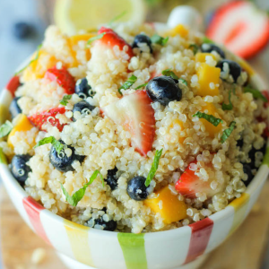

1. To make the vinaigrette, whisk together olive oil, apple cider vinegar, lemon zest and juice, and sugar in a small bowl; set aside.
2. In a large bowl, combine quinoa, mango, strawberries, blueberries and pine nuts. Stir in lemon vinaigrette.
3. Serve immediately, garnished with mint leaves.